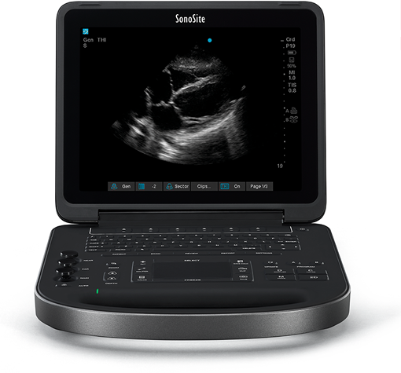

SonoSIte edge II

Registro Sanitario: 1836E2016 SSA
DESCRIPCIÓN:
El sistema de ultrasonido SonoSite Edge II ofrece una experiencia de imagen excepcional gracias a las innovaciones únicas en el mercado como la tecnología Direct Clear y cable blindado siguiendo los pilares de SonoSite: resistencia, fiabilidad y facilidad de uso.
CARACTERÍSTICAS:
• Transductor de alta durabilidad con cable blindado que lo protege y mantiene la calidad de imagen.
• Mejor rendimiento y resolución de contraste gracias a la tecnología Direct Clear.
• Compatibilidad con diferentes tipos de transductores.
Transductor de alta durabilidad
Edge II está diseñado con la nueva tecnología de cable blindado, gracias a su aislamiento metálico, éstos protegen a los transductores de los accidentes más comunes como el enrollamiento de cables manteniendo la calidad de imagen a lo largo de la vida útil del transductor.
Tecnología Direct Clear
A diferencia de los transductores convencionales, SonoSite incorporó esta tecnología más eficiente que aumenta el rendimiento del transductor y la resolución de contraste, permitiendo una visualización más exacta.
Mejor visualización
Se ha añadido al transductor una capa adicional que brinda una mejor impedancia acuática entre el transductor y el paciente, aumentando así la capacidad de identificar estructuras más pequeñas para generar diagnósticos más precisos.
Gracias a la tecnología dualflex y al nuevo diseño de lente fino, el transductor HFL38xi ofrece una mayor claridad y sensibilidad de los colores permitiendo una mayor visualización de los nervios y vasos sanguíneos como guías de procedimiento y análisis de flujo.
APLICACIONES POINT OF CARE EDGE II
Anestesia Guía de accesos vasculares, anestesia regional,
monitoreo intraoperatorio, volumen de fluidos y
función cardiaca.
Cardiología Ecocardiografía, evaluación intracardiaca.
Medicina de cuidados críticos Guía de procedimientos, evaluación pulmonar.
Medicina de urgencias FAST, evaluación enfocada de urgencias, guía de
procedimientos.
Cirugía general Ultrasonografía de mama, guía de procedimientos,
evaluación intraoperatoria.
Neonatología Craneal y evaluación pulmonar.
Neurología Doppler transcraneal, evaluación de nervios
periféricos.
Radiología intervencionista Procedimientos guiados.
Cirugía vascular Carótida, evaluación arterial y venosa. Evaluación de
procedimientos.
Urología Renal, vejiga, evaluación de próstata y
procedimientos guiados.
Nefrología Accesos vasculares para diálisis.
DATOS COMPLEMENTARIOS: En FUJIFILM de México queremos convertirnos en su mejor aliado, es por eso que estamos comprometidos con nuestros clientes y ofrecemos el mejor servicio posventa.
FUJIFILM DE MÉXICO, S.A. de C.V.
Teléfono: (55) 5263-5500
e-mail: ultrasonido@fujifilm.com.mx
www.fujifilm.com.mx